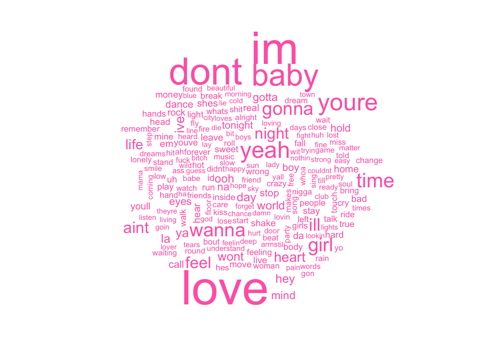
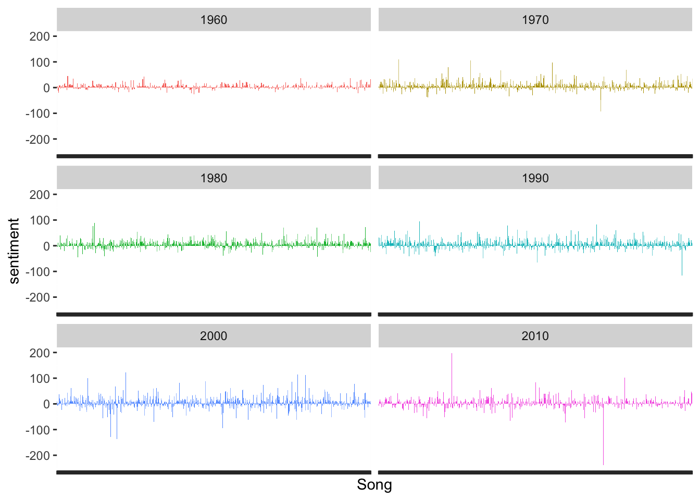
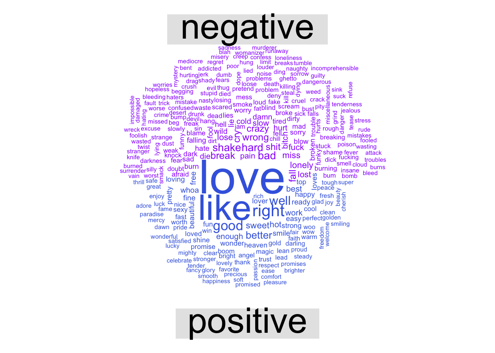
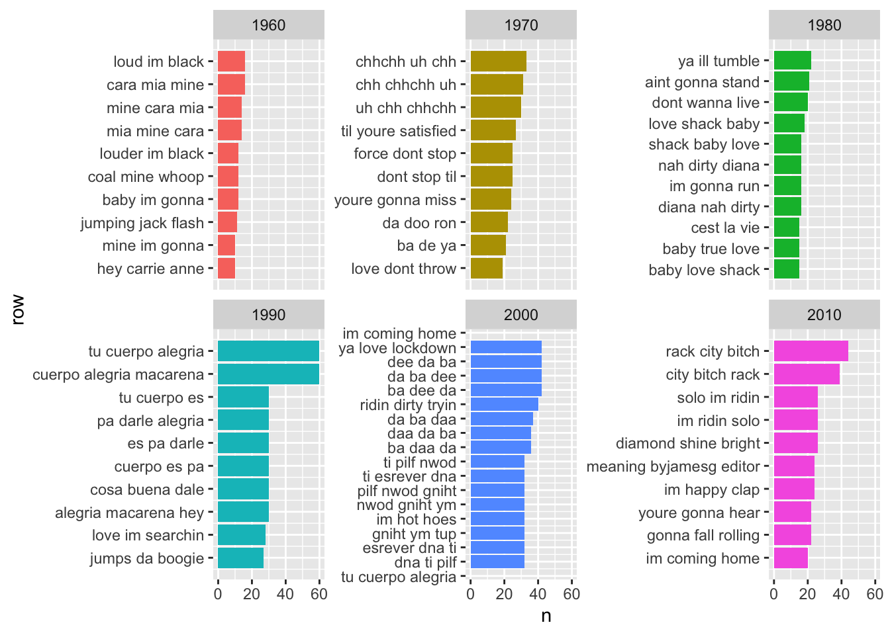

My sister, Nassim, is a singer/songwriter who lives in Los Angeles. For some reason she values my feedback and sometimes she sends me her songs. She recently sent me some of her songs and our conversation went like this (some details have been changed because I don’t remember them):
Gol: I like your sad songs about heartbreak and all the hard stuff you’ve gone through much more than the poppy, happy songs. Nassim: Most people don’t want to hear sad songs–they want happy, upbeat music! That’s what sells. Gol: Are you sure? Nassim: Yes. Gol: Well, that’s an empirical question. Nassim: What? Gol: I mean that we can probably look to see if that’s true or not based on some data. Nassim: …
So, I downloaded <a href=“https://www.kaggle.com/rakannimer/billboard-lyrics”, target="_blank">a dataset that had the Billboard Hot-100 Songs from 1964 - 2015 and tried to answer our question: Are sad songs or happy songs more popular?
I used the following packages:
library("tidyverse")
library("tidytext")
library("wordcloud")
library("reshape2")This is a tibble (a quick look) at the dataset that has the lyrics from the Billboard Top 100 Songs from 1965 - 2015.
lyrics## # A tibble: 5,100 x 6
## Rank Song Artist Year Lyrics Source
## <dbl> <chr> <chr> <dbl> <chr> <dbl>
## 1 1 wooly bully sam the sha… 1965 sam the sham miscellane… 3
## 2 2 i cant help my… four tops 1965 sugar pie honey bunch y… 1
## 3 3 i cant get no … the rolling… 1965 <NA> 1
## 4 4 you were on my… we five 1965 when i woke up this mor… 1
## 5 5 youve lost tha… the righteo… 1965 you never close your ey… 1
## 6 6 downtown petula clark 1965 when youre alone and li… 1
## 7 7 help the beatles 1965 help i need somebody he… 3
## 8 8 cant you hear … hermans her… 1965 carterlewis every time … 5
## 9 9 crying in the … elvis presl… 1965 you saw me crying in th… 1
## 10 10 my girl the temptat… 1965 ive got sunshine on a c… 3
## # … with 5,090 more rowsI added a decade column and then created a dataset called lyrics.tidy that split all the lyrics into separate words.
lyrics <- lyrics %>%
mutate(decade =
ifelse(lyrics$Year %in% 1965:1969, "1960",
ifelse(lyrics$Year %in% 1970:1979, "1970",
ifelse(lyrics$Year %in% 1980:1989, "1980",
ifelse(lyrics$Year %in% 1990:1999, "1990",
ifelse(lyrics$Year %in% 2000:2009, "2000",
ifelse(lyrics$Year %in% 2010:2015, "2010",
"NA"
)))))))
lyrics.tidy <- lyrics %>%
na.omit() %>%
unnest_tokens(word, Lyrics) #splits lyrics into separate wordsNow for fun, I visualized the words in a hot pink world cloud :) Not suprisingly, LOVE is a popular concept to write about!
lyrics.tidy %>%
anti_join(stop_words) %>% # removes stop words (and, the, etc.)
count(word) %>% # gives a count of how many times that word appears in the dataset
with(wordcloud(word, n, max.words = 200, color = "hotpink")) # makes a word cloud
Okay, now let’s see what sort of emotion is present in these lyrics. Using the Bing sentiment word dictionary, I matched each word with it’s sentiment score. A higher score means more positive sentiment and a lower score means more negative sentiment.
get_sentiments("bing")## # A tibble: 6,786 x 2
## word sentiment
## <chr> <chr>
## 1 2-faces negative
## 2 abnormal negative
## 3 abolish negative
## 4 abominable negative
## 5 abominably negative
## 6 abominate negative
## 7 abomination negative
## 8 abort negative
## 9 aborted negative
## 10 aborts negative
## # … with 6,776 more rowslyrics.sentiment.bing <- lyrics.tidy %>%
inner_join(get_sentiments("bing")) %>%
count(Song, Year, decade, sentiment) %>%
spread(sentiment, n, fill = 0) %>%
mutate(sentiment = positive - negative) Now, let’s see how sentiment has changed throughout the decades. On average, popular song lyrics have gotten more negative over time (although I’m not sure what was going on in the 1960’s…)
ggplot(lyrics.sentiment.bing, aes(decade, sentiment, fill = decade)) +
stat_summary(fun.y = "mean", geom = "bar")Here is another plot by decade, but this one shows us the sentiment score for every song in each decade. So, here we can see there is more fluctuation in the later decades and definitely more extreme scores in the 2010’s.
ggplot(lyrics.sentiment.bing, aes(Song, sentiment, fill = decade)) +
geom_col(show.legend = FALSE) +
facet_wrap(~decade, ncol = 2, scales ="free_x") +
theme(axis.text.x = element_blank()) 
I wondered what those really high and low songs from the 2010’s were, so I pulled those out. So, Shake it off by Taylor Swift is the song with the negative spike in the 2010’s graph. And Super Bass by Nicki Minaj is the song with the positive spike 2010’s graph. One thing to consider with this analysis is how many times a word is repeated in a song. The more often a word is repeated, the higher/lower the sentiment score will be. Hmmm…
lyrics.sentiment.bing %>%
filter(decade == 2010) %>%
arrange(-abs(sentiment)) %>%
slice(1:3)## # A tibble: 3 x 6
## Song Year decade negative positive sentiment
## <chr> <dbl> <chr> <dbl> <dbl> <dbl>
## 1 shake it off 2014 2010 123 4 -119
## 2 shake it off 2015 2010 123 4 -119
## 3 super bass 2011 2010 6 108 102I made another word cloud of positive and negative sentiment words. Again, LOVE is very popular to write about!
lyrics.tidy %>%
inner_join(get_sentiments("bing")) %>%
count(word, sentiment, sort = TRUE) %>%
acast(word ~ sentiment, value.var = "n", fill = 0 ) %>%
comparison.cloud(colors = c("purple1" , "royalblue"))
It’s easier to visualize the most common positive and negative words in a barchart.
bing.word.counts <- lyrics.tidy %>%
inner_join(get_sentiments("bing")) %>%
count(word, sentiment, sort = TRUE) %>%
ungroup() %>%
group_by(sentiment) %>%
top_n(15) %>%
ungroup() %>%
mutate(word = reorder(word, n)) %>%
ggplot(aes(word, n, fill = sentiment)) +
geom_col(show.legend = FALSE) +
facet_wrap(~sentiment, scales="free_y") +
labs(y = "Number of times the word is used", x = NULL) + coord_flip()
bing.word.countsSo, I wondered if I could get any more insight by looking at groups of words together. I decided to look at the most common trigrams per decade. I added a condition where I did not include trigrams with repeated words.
lyrics.grams <- lyrics %>%
mutate_if(is.factor, as.character) %>%
unnest_tokens(bigram, Lyrics, token ="ngrams" , n = 3) %>%
separate(bigram, c("word1", "word2", "word3"), sep = " ") %>%
filter(!word1 %in% stop_words$word) %>%
filter(!word2 %in% stop_words$word) %>%
filter(!word3 %in% stop_words$word) %>%
filter(word1 != word2) %>%
filter(word2 != word3) %>%
filter(word1 != word3) %>%
unite(bigram, word1, word2, word3, sep= " ") %>%
inner_join(lyrics) %>%
count(bigram, decade, sort = TRUE) %>%
group_by(decade) %>%
top_n(10, n) %>%
ungroup() %>%
arrange(decade, n) %>%
mutate(row = row_number())
lyrics.grams %>%
ggplot(aes(row, n, fill = factor(decade))) +
geom_col(show.legend= FALSE) + facet_wrap(~decade, scales = "free_y") +
scale_x_continuous(breaks = lyrics.grams$row, labels = lyrics.grams$bigram) +
coord_flip() Even with the condition of no repeating word within trigrams, we can see words are repeated a lot in different orders. Also, some of the most frequently occuring trigrams belonged to just one song. For example, “force don’t stop” is the fifth most frequently occuring trigram from the 1970’s and is from one Michael Jackson song. So, clearly repeating words are affecting the analysis, but at this point it’s unclear how much of an effect it has on the results. So, a future analysis could identify unique words in each song and rerun the sentiment analysis on only the unique words.
There are plenty more analyses that can be done (for example: we could look beyond lyrics and examine the tempo or minor/major chords to determine sad vs. happy), but from this, it seems popular songs tend to use positive/happy lyrics although there has been a bit of a trend towards more sad/negative since the 1970’s.